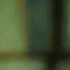

31 · 20 · 3 시간 전 · 원문
수집 당시 댓글 20개
유아학교 · 13 시간 전
↳ 답글 · 우메와모모의평범한일상 · 13 시간 전
↳ 답글 · 유아학교 · 12 시간 전
오잉또리 · 12 시간 전
알고 봐도 손으로 가리는 타이밍이 절묘하네
↳ 답글 · 고추건조기 · 3 시간 전

포도음료 · 10 시간 전
?
Soyuz · 5 시간 전
얼굴피부색이 간염환자같냐
라다 · 3 시간 전
완ㅂ벽히이해했어!@
휴먼휴먼 · 3 시간 전
마술은 창의력을 극한으로 끌어올리는 엔터테인먼트라고 할 수 있을 거 같다
베레타38 · 3 시간 전
자석은 마법이다
삼국지프로게이머 · 3 시간 전
마술도구 알게되면 이걸 어캐 만들 생각했을까 하는게 더 많은듯
늒네와쪄염 · 3 시간 전
뭔가 했다는건 알았는데 자석일줄은 몰랐네
↳ 답글 · 너는지금뭐해 · 3 시간 전
ㅋㅋㅋㅋㅋㅋㅋㅋㅋㅋㅋ뭔갈 했겠죠 당연히.. 마법이겠냐
↳ 답글 · 크라바틴 · 3 시간 전
멍청하네. 마법쓰는애들 가끔 있는거 모르냐?
↳ 답글 · 닉네임변경37 · 2 시간 전
ediredo · 3 시간 전
마술도구 만드는게 일이네
s4gd2we · 2 시간 전
노엘갤러거스하이플라잉버즈 · 2 시간 전
닉네임변경37 · 2 시간 전
루카 · 1 시간 전
저 중국인 아저씨는 머하는 사람인지 모든 마법에 트릴을 쇼츠로 만들고 있냐
댓글
수집 당시 댓글 20개
유아학교 · 13 시간 전
· 우메와모모의평범한일상 · 13 시간 전
· 유아학교 · 12 시간 전
오잉또리 · 12 시간 전
알고 봐도 손으로 가리는 타이밍이 절묘하네
· 고추건조기 · 3 시간 전

포도음료 · 10 시간 전
?
Soyuz · 5 시간 전
얼굴피부색이 간염환자같냐
라다 · 3 시간 전
완ㅂ벽히이해했어!@
휴먼휴먼 · 3 시간 전
마술은 창의력을 극한으로 끌어올리는 엔터테인먼트라고 할 수 있을 거 같다
베레타38 · 3 시간 전
자석은 마법이다
삼국지프로게이머 · 3 시간 전
마술도구 알게되면 이걸 어캐 만들 생각했을까 하는게 더 많은듯
늒네와쪄염 · 3 시간 전
뭔가 했다는건 알았는데 자석일줄은 몰랐네
· 너는지금뭐해 · 3 시간 전
ㅋㅋㅋㅋㅋㅋㅋㅋㅋㅋㅋ뭔갈 했겠죠 당연히.. 마법이겠냐
· 크라바틴 · 3 시간 전
멍청하네. 마법쓰는애들 가끔 있는거 모르냐?
· 닉네임변경37 · 2 시간 전
ediredo · 3 시간 전
마술도구 만드는게 일이네
s4gd2we · 2 시간 전
노엘갤러거스하이플라잉버즈 · 2 시간 전
닉네임변경37 · 2 시간 전
루카 · 1 시간 전
저 중국인 아저씨는 머하는 사람인지 모든 마법에 트릴을 쇼츠로 만들고 있냐